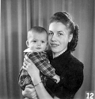
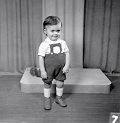
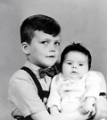
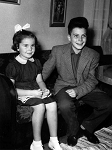
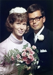
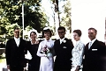
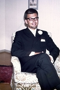
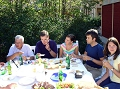
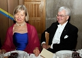
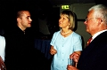

Företagsledare Kurt Arne Forsell
1976-2001 i bl.a. Atlas Copco, Bahco och Pharmacia (Pharmacia Biotech, Amersham Pharmacia).
| Född: | 1942-07-16 Boliden, Skellefteå lfs, Skellefteå sn. [1] | Föräldrar: Birger* Algot Forsell, Reparatör och hu. Gerda Birgit* Signhild Brudell, Boliden. |
|---|
| Vigsel: | 1969-07-19 Bromma kyrka, Bromma fs, Stockholm. |
|---|
| Levde: | 1971 Trångsund, Huddinge fs, Huddinge kn. [2] |
|---|
| Levde: | 1991 Tattby 31:20, Örtagårdsv 6, Saltsjöbaden, Saltsjöbadens fs, Nacka kn. [3] |
|---|
| Levde: | 2008 S:t Johannesgatan 31 B 5tr, Uppsala. [4] |
|---|
| Levde: | 2012 S:t Johannesgatan 31 B lgh 5tr 1501, Uppsala. [4] |
|---|
| Barn: |
|---|
| Eva Kerstin Margareta Forsell Berre (1971 - ) |
| Erik Arne Forsell (1975 - ) |
Noteringar
CURRICULUM VITAE
Arne Forsell
S:t Johannesgatan 31 B
752 33 Uppsala
Född: 1942
Civilstånd: Gift, två barn
Utbildning: Civilingenjör, KTH, väg och vatten, 1967
Företagsekonomi, 50 poäng, Umeå Universitet, 1972
IFL-skolan, 1976
1967 - 69 Granit & Beton AB, Stockholm
Arbetsledare, platschef
1969 - 84 Atlas Copco gruppen i Sverige, Portugal och Norge
Försäljningsingenjör, försäljningschef, säljbolags-VD,
Produktbolags-VD, koncernledningsmedlem
1984 - 87 AB Mecman, Stockholm
VD
1987 - 88 Movexa AB, Stockholm
VD
1989 - 90 Lagerkvist & Partners AB, Stockholm
VVD, managementkonsult
1990 - 97 Pharmacia Biotech AB, Uppsala
VD
1997 - 01 Amersham Pharmacia Biotech AB, Uppsala
VD
Amersham Pharmacia Biotech Ltd, England
Deputy CEO
2001- Arne Forsell AB, Uppsala
VD och ägare
2001 - 2006 Uplife Management AB, Uppsala
Funding Partner
2006- 2010 Uplife Life Science HB, Uppsala
Senior Partner
Nuvarande styrelseuppdrag:
Ordförande i Uppsala Akademiförvaltning
UAF Fastigheter AB
Stiftelsen för zoologisk forskning Uppsala
Arne Forsell AB
Styrelseledamot i Brf. Observatoriet
Sångsällskapet Orphei Drängar
Föreningen OD:s Vänner
Stiftelsen OD:s Jubileumsfond
Karlfeldtsamfundet
Övrigt:
Ledamot och skattmästare i Kungliga Vetenskaps-Societeten, Uppsala
Skattmästare i Sångsällskapet Orphei Drängar
Ledamot i Stockholms Handelskammares fullmäktige
Bland tidigare styrelseuppdrag kan nämnas.
Ordförande:
Nordea Regionbank Mellansverige, Norr och Mellansverige 1996-2003
Ung Företagsamhet i Uppsala län 2001-2005
Uppsvenska Handelskammaren 2001-2006 (ledamot sedan 1998)
Nordea Uppsala 2004-2008
Societas Intellectualis Seniorum Upsaliensis (SISU) 2007-2008
Ledamot:
Östhammars Näringslivsutveckling AB 1995-2003
SLU Holding AB 2000-2004
Teknikbrostiftelsen i Uppsala 2000-2007
Länsstyrelsen i Uppsala län 2003-2006
Innovationsbron i Uppsala AB 2005-2008
Musik i Uppland 2003-2010
Uppsala 2011-03-29
Personhistoria
| Årtal | Ålder | Händelse |
|---|
| 1942 |
|
Födelse 1942-07-16 Boliden, Skellefteå lfs, Skellefteå sn [1] |
| 1945 |
3 år |
Makan Kerstin Margareta Lennerstrand föds 1945-09-27 Vänersborg, Älvsborgs län |
| 1949 |
|
Systern Ulla-Stina Forsell föds 1949 Boliden, Skellefteå lfs, Skellefteå sn [5] |
| 1969 |
27 år |
Vigsel Kerstin Margareta Lennerstrand 1969-07-19 Bromma kyrka, Bromma fs, Stockholm |
| 1971 |
|
Levde Kerstin Margareta Lennerstrand 1971 Trångsund, Huddinge fs, Huddinge kn [2] |
| 1971 |
29 år |
Dottern Eva Kerstin Margareta Forsell Berre föds 1971-09-15 Skellefteå, Sankt Olovs fs, Skellefteå stad [3] |
| 1975 |
33 år |
Sonen Erik Arne Forsell föds 1975-09-21 Kumla fs, Örebro län [3] |
| 1986 |
44 år |
Fadern Verkmästare vid Bolidens Gruvaktiebolag Birger Algot Forsell dör 1986-10-08 Bjurliden 1:522, Torget 2, Boliden, Bolidens fs, Skellefteå kn [6] |
| 1991 |
|
Levde Kerstin Margareta Lennerstrand 1991 Tattby 31:20, Örtagårdsv 6, Saltsjöbaden, Saltsjöbadens fs, Nacka kn [3] |
| 2008 |
|
Levde Kerstin Margareta Lennerstrand 2008 S:t Johannesgatan 31 B 5tr, Uppsala [4] |
| 2009 |
66 år |
Modern Gerda Birgit Signhild Brudell dör 2009-02-15 Öjebyn, Piteå lfs, Piteå kn |
| 2012 |
|
Levde Kerstin Margareta Lennerstrand 2012 S:t Johannesgatan 31 B lgh 5tr 1501, Uppsala [4] |
Dokument
Källor
| [1] | SCB Födda AC Skellefteå lfs 220/1942, Mtl Stockholms stad och län 1971 |
| |
| | |
| [2] | Mtl Stockholms stad och län 1971 |
| |
| | |
| [3] | Mantalslängd 1991, Stockholms län |
| |
| | |
| [4] | https://www.ratsit.se/sok/avancerat/person |
| |
| | |
| [5] | Mtl Västerbottens län 1971 |
| |
| | |
| [6] | SPAR 90, RTB 86 |
| |
|
|  |
| 1942. Birgit med Arne 4 månader. |
| |
|  |
| (1944/45). Arne 2,5 år. |
| |
|  |
| 1949. Arne 7 år med Ulla-Stina 2 månader. |
| |
|  |
| 1956. Ulla-Stina och Arne. |
| |
|  |
| 1967-07-19. Brudparet Kerstin Lennerstrand och Arne Forsell. Vigsel i Bromma kyrka, Stockholm. Foto: Beckman, Vällingby, Stockholm. |
| |
|  |
| 1969-07-19. Brudparet Kerstin Lennerstrand och Arne Forsell flankeras av föräldrarna Åke och Margareta Lennerstrand t.v. och Birgit och Birger Forsell t.h. utanför Bromma kyrka. |
| |
|  |
| 1969-07-19. Brudgummen Arne Forsell i egen hög person. |
| |
|  |
| Arne, Erik, Maria, David och Eva. |
| |
|  |
| 2009. Kerstin och Arne på fest med OD. |
| |
|  |
| 2009. Peter Fredman, Kerstin och Arne Forsell. |
|
{kind=link}
{kind=link}
{kind=link}
{kind=link}
{kind=link}
{kind=link}
{kind=link}
{kind=link}
{kind=link}
{kind=link}